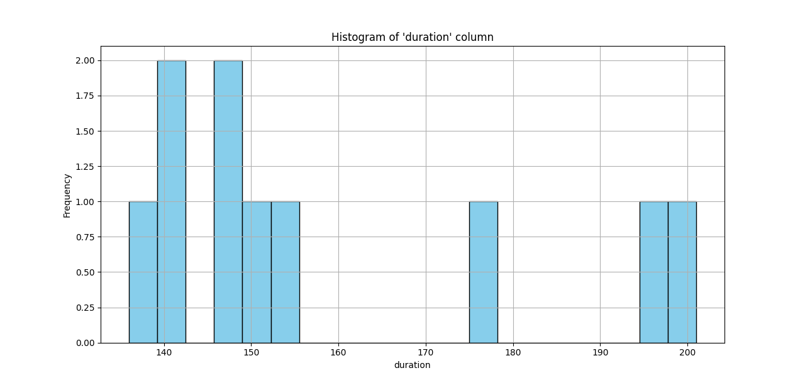
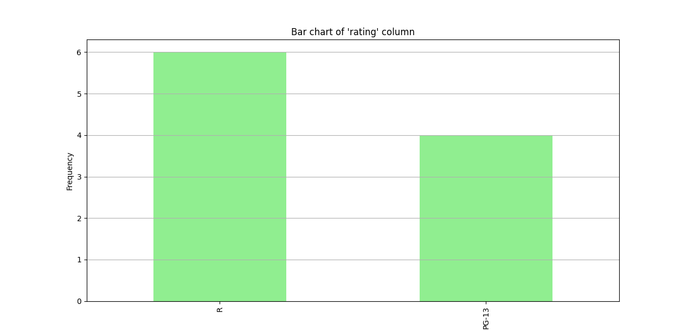

CSV Data Analysis

What it is
A Python script that reads a CSV file, runs summary analysis across the columns and generates charts from the results.
What it involved
Loading and cleaning the data with pandas, working out which summaries were actually worth showing, and plotting them with matplotlib. The useful lesson was how much of the work sits in the cleaning rather than the charting.
